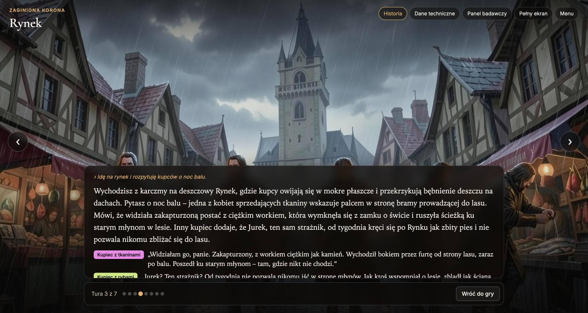
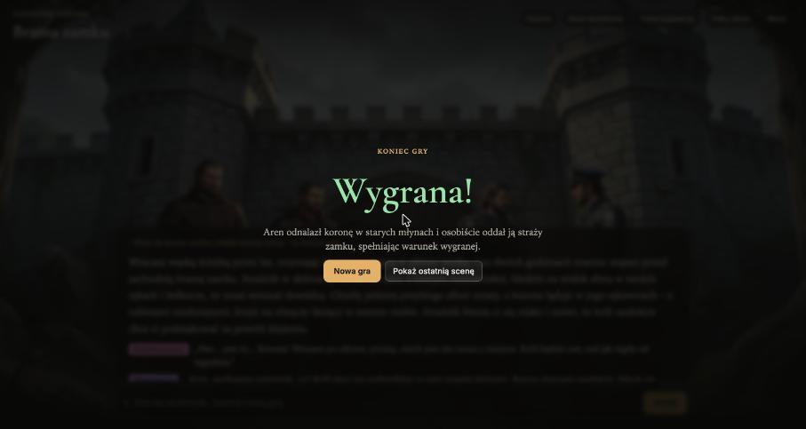

Jak uruchomić grę na swoim komputerze i w nią zagrać.
Dynamic Visual Novel to gra, w której fabułę, dialogi i obrazy tworzą na bieżąco modele AI. Nie ma gotowych wyborów: wpisujesz własnymi słowami, co robisz, a narrator opowiada, co dzieje się dalej. Możesz też opisać własny pomysł na świat, a model zbuduje z niego całą przygodę.

git --versionwsl --install.docker compose według instrukcji na docs.docker.com.sudo apt install git.Sprawdź, czy Docker działa:
docker --version docker compose version
W terminalu wpisz po kolei:
# 1. pobierz projekt git clone https://github.com/AntttPe/dynamic-visual-novel.git cd dynamic-visual-novel # 2. utwórz plik z ustawieniami (na start nic w nim nie zmieniasz) cp .env.example .env # 3. zbuduj i uruchom grę (pierwszy raz trwa kilka minut) docker compose up -d --build
Gdy komenda się skończy, otwórz w przeglądarce adres http://localhost:8000.
cd ~), a nie na dysk C:\..env, wklej go do katalogu
dynamic-visual-novel zamiast kroku 2. Nie wysyłaj tego pliku dalej i nie wrzucaj go do internetu.
| Sytuacja | Co zrobić |
|---|---|
| Chcesz tylko zobaczyć, jak wygląda gra | Kliknij Podgląd bez modelu (demo). Działa od razu, bez kluczy i bez internetu. Odpowiedzi są sztuczne, ale widać cały ekran gry. |
Masz plik .env od zespołu | Wybierz świat i kliknij Zacznij grę. Model jest już ustawiony. Model na serwerze uczelni działa tylko przy włączonym VPN uczelni. |
| Masz własne konto u dostawcy AI (OpenAI, Anthropic, Google Gemini, OpenRouter) | Otwórz Ustawienia deweloperskie (prawy górny róg menu).
W polu Model narratora wybierz „Inny model” i wpisz nazwę, np. openai/gpt-4o-mini
albo anthropic/claude-haiku-5-5. Rozwiń Własne API modelu tekstowego i wklej swój klucz.
Klucz zostaje na twoim komputerze. |
Przy nazwie modelu w menu zielona kropka oznacza, że model odpowiada.
W polu na dole ekranu wpisz własnymi słowami, co robisz, i naciśnij Enter. Na przykład:
Rozglądam się po karczmie i siadam przy barze. Pytam karczmarza, czy widział ostatnio kogoś obcego. Idę za zakapturzonym mężczyzną, starając się nie dać się zauważyć.
Odpowiedź narratora pojawia się po kilkudziesięciu sekundach (zależy od modelu). Obraz sceny, jeśli jest włączony, dochodzi chwilę później. Gra kończy się planszą Wygrana albo Przegrana, gdy osiągniesz cel świata albo coś pójdzie bardzo źle.
| Element ekranu | Do czego służy |
|---|---|
| Karta Cel (prawy górny róg) | Cel przygody. Przy włączonych podpowiedziach także propozycja następnego kroku. |
| Historia albo ← → | Przewijanie wcześniejszych tur jak pokazu slajdów. Esc wraca do gry. |
| Pełny ekran albo F | Chowa przeglądarkę, zostaje sama gra. |
| Panel badawczy, Dane techniczne | Dane każdej tury: czas odpowiedzi, liczba tokenów, stan świata, prompt i surowa odpowiedź modelu. |
| Menu | Powrót do menu. Bieżąca gra zapisuje się sama. |
W menu wybierz kartę Własny świat i wpisz kilka zdań pomysłu (albo kliknij jeden z przykładów), np. „Cyberpunkowy Kraków w 2090 roku, jestem detektywką i szukam zaginionego androida”. Model tworzy z tego bohatera, cel, lokacje i postacie. Trwa to od jednej do kilku minut. W trakcie możesz kliknąć Anuluj.

Zapis jest tylko na twoim komputerze, w katalogu data/ w folderze projektu. Usunięcie tego katalogu usuwa wszystkie gry.
| Co chcesz zrobić | Komenda (w katalogu dynamic-visual-novel) |
|---|---|
| Wyłączyć grę na przerwę | docker compose stop |
| Włączyć ją z powrotem | docker compose start, potem http://localhost:8000 |
| Pobrać nowszą wersję gry | git pull, potem docker compose up -d --build |
| Usunąć kontener (zapisane gry zostają) | docker compose down |
| Problem | Rozwiązanie |
|---|---|
Cannot connect to the Docker daemon | Docker Desktop nie jest włączony. Uruchom go i powtórz komendę. |
port is already allocated | Port 8000 zajmuje inny program. Zamknij go albo w pliku docker-compose.yml zmień "8000:8000" na "8080:8000" i wejdź na localhost:8080. |
| Strona localhost:8000 się nie otwiera | Poczekaj minutę po uruchomieniu. Sprawdź logi: docker compose logs -f app. |
| Przy modelu czerwona albo żółta kropka | Model nie odpowiada. Sprawdź internet, VPN (dla modelu uczelni) albo klucz w Ustawieniach deweloperskich. Do samego oglądania użyj trybu demo. |
| „Narrator nie zwrócił poprawnej odpowiedzi” | Model pomylił format. Wyślij akcję jeszcze raz albo wybierz większy model. |
| Błąd 401 przy własnym kluczu | Klucz jest zły albo pasuje do innego dostawcy niż początek nazwy modelu (openai/, anthropic/…). |
| Brak obrazów | To normalne bez serwera obrazów. Gra działa wtedy z samym tekstem. |
Więcej szczegółów (modele, obrazy, eksperymenty): README projektu na GitHubie, github.com/AntttPe/dynamic-visual-novel.